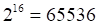

Субтрактивтік түстер жүйесі Баспаға шығару процесінде жарық қағаз бетінен шағылысады. Сондықтан да графикалық суреттерді баспаға шығару үшін шағылысқан жарықпен жұмыс істейтін субтрактивтік түстер жүйесі қолданылады.
Ақ түс кемпірқосақтың барлық түстерінен тұрады. Егер қарапайым призма арқылы жарық сәулесін жіберсек, ол түстік спектрге бөлініп кетеді. Қызыл,, қызғылт сары, сары, жасыл, көгілдір, көк және күлгін түстре жарық спекторын көрсететіндей етеді. Ақ қағазға жарық түсіргенде барлық түстерді шағылыстырады, ал боялған қағаз түстердің жартысын жұтады, ал қалғандарын шағылыстырады. Мысалы, қызыл түсті қағаздың бетіне ақ түсті жарық түссе, онда қызыл түсті болып көрінеді, себебі, мұндай түсті қағаз қызыл түстен басқа түстердің бәрін жұтады. Ал осындай қызыл түсті қағазға көк түсті жарық түссе, онда қағаз қара түсті болып көрінеді, себебі көк түс ол түсті жұтады.
Субтрактивтік түстер жүйесінде негізгі түстер көгілдір (Cyan), алқызыл (Magenta) және сары (Yellow) болып табылады.
Ол түстердің әрқайсысы баспаға шығарылатын бетке түстен ақ жарықтан белгілі бір түстерді жұтады. Осылайша негізгі үш түс қара, қызыл, жасыл және көк түстерді алу үшін қоладынлады.
Бұл үлгідегі негізгі түстер ақ түстен RGB үлгісінің негізгі аддитивтік түстерін азайту арқылы алынады. Бұл жағдайда негізгі субтративтік түстер үшеу болатындығы түсінікті:
ақ -қызыл = көгілдір
ақ –жасыл = алқызыл
ақ –көк = сары
көгілдір + алқызыл + сары = қара,
көгілдір+алқызыл = көк,
сары + алқызыл = қызыл,
сары+ + көгілдір = жасыл.
Негізгі түстерді әр түрлі порцияда араластыра отырып, ақ қағазда алуан түрлі түс ренктерін алуға болады.
Осы үш негізгі түс болмаған жағдайда ақ түс алуға болады. Көгілдір, алқызыл,сары түстерінің жоғары пайыздық мөлшері қара түсті береді. Кейбір ерекшеліктеріне байланысты типографиялық бояуларда осы үш негізгі түстің қоспасы кір – қоңыр түс береді, сондықтан да суретті баспаға шығаруда қара бояу ( Black) қосылады.
Субтрактивтік түстер жүйесі қысқаша CMYK деп белгілейді.
CMYK үлгісі координаталар басы орналастырылған RGB, үлгісіне ұқсас.
Үлгінің ерекше нүктелері мен сызықтары үлгі.
· Көрерменге жақын нүкте: барлық үш сыңарлардың максимал мәндерін араластырған кезде қара түс шығуы керек.
· Алдыңғы екі нүктені қосатын кескіндіде ( диагональ бойынша). Үш сыңарлардың тең мәндерін араластыру сұр реңді береді.
· Текшенің үш төбесі таза бастапқы түстерді де, қалған үшеуі бастапқы түстердің екі рет араласуын бейнелейді.
Түрлі түсті суретті төрт компонентке бөлуді арнайы түстіболу программаларды орындайды. Егер принтерлер СМY жүйесін қолданса, онда суретті RGB жүйесінен СМY жүйесіне түрлендіру өте қарапайым:СМY жүйесіндегі түстердің мәні – RGB жүйесінің мәніне кері ретпен орналасады.
Ауыстыру формулалары:
RGB → CMYK:
Cyan = (1 – Red – Black)/(1 – Black)
Magenta = ( 1 – Green – Black)/(1 – Bkack)
Yellow = (1 – Blue – Black)/(1 – Black)
Black = min(1 – Red, 1 – Green, 1 – blue)
CMYK → RGB:
Red = 1 - min( 1,Cyan*(1 – Black)+Black)
Green = 1- min(1,Magenta*(1 - Black)+Black)
Blue = 1 – min(1,Yellow*(1 - Black)+Black)
Қолданылуы. Үлгі нақты полиграфиялық бояуларды сипаттайтындықтан, оны полтграфиялық оттиск алу үшін қолданылады.
RGB және CMY модельдерінің негізгі түстерінің өзара байланысы «түстік дөңгелекте» көрсетілген. Суретті көршілес түстердің қосындысы әрбір үшбұрыштың төбесіндегі түсті береді.
Ал CMYК түстік моделін RGB түстік моделіне түрлендіру қиынырақ, себебі нүктенің түсі RGB түстерінің қосындысынан анықталса, ал жаңа жүйеде СМУ мәндерінің қосындысынан қара түсті қосу керек болады, түрлендіру үшін түсті бөлу программасы бірқатар математикалық амалдар орындайды. Егер RGB жүйесінде нүкте таза қызыл түстен тұрса (100%R, 0% G, 0% B), онда CMYK түстік жүйесінде ол алқызыл және сары түстердің бірдей мәніне тең болуы керек (0 % C, 100% M, 100%Y, 0%K).
Бірнеше түстердің RGB және CMYK түстік модельдерді қолданып бірнеше түстерді сипаттап көрелік (құраушы түстердің өзгеру дипазоны(RGB 0-ден 255-ке дейін, ал CMYK- 0-ден 100-ге дейін)).
Тұтас түрлі түсті аумақтың орнына түсті бөлу программасы жекеше нүктелерден растрлар құрады, әр түсті нүктелер бір – бірінің үстіне түспей, қатар орналасатындай нүктелік растлар бір – бірінен жайлап қана бұрыш жасай орналасады.
Түрлі түсті нүктелер бір – біріне өте жақын орналасқан, олар бітұтас болып көрінеді, біздің көзіміз нәтижелік түсті қабылдайды.
Осылайша RGB түстер жүйесі таратылатын жарықпен, ал CMYK шағлысқан жарықпен жұмыс істейді. Егер мониторды алынған суретті принтерде басып шығару керек боблса, онда арнайы программа бір түстер жүйесінен екінші түстер жүйесіне түрлендіріледі. Бірақ RGB және CMYK жүйелерінде түстерді алу табиғаты әртүрлі. Соондықтан да монитордағы түс пен баспаға шығаратын түсті бірдей етіп алу өте қиын. Баспаға шққан түске қарағанда экрандағы түс неғұрлым ашығырақ болады.
Түстік модель құрылған түстердің барлық жиыны – түстік диапазон деп аталады. RGB диапазоны CMYK диапазонына қарағанда кеңірек. Сондықтан экранда құрылған түстерді баспаға шығаруда алу мүмкін емес. Сондықтан да кейбір графикалық программаларда диапазондық алдын ала сақтандыру көрсеткіштері қарастырылған. Олар RGB моделінде құрылған түс CMYK моделі дипазоны шеңберінен шғып кеткен жағдайда пайда болады. Adobe Photoshop – та ескерту көрсеткіші кішкентай леп белгісі түрінде көрсетіледі.
Corel Draw мен Adobe Photoshop графикалық редакторында экранда суретті тек қана RGB моделінде ғана емес CMYK моделінде де құруға болады. CMYK моделін қолданып салған суреттердің экранды түсі мен баспаға шыққандағы түстері бірдей болады.
Ол суретті баспаға шығаруда полиграфияда қолданылады. Типографиялық құрылғылар және қазіргі принтерлерде түстің осы моделін қолдануы негізінде жұмыс істейді.
HSB – түстік моделі. HSB – түстік моделі – адамның түсті қаблдау ерекшелігі ескеріле отырып жасалған түстік модель.
Мұндағы H,S,B әріптері ешқандай түсті бермейді, олар тек қана
· Түстік реңі (Hue), Н
· Түстің қанықтылығын (түске ақ бояуды қосу пайызымен) (Saturation – насыщенность - қанықтылығы )S,
· Түстің ашықтығын (түске қара бояуды қосу пайызымен) (Brightness – яркость - ашықтығы) В символдармен көрсетеді.
Түстің мәні дөңгелектегі нүкте сияқт таңдалады (шеңбердің центрінен шыққан сол нүктені көрсететін вектор). Әр түрлі реңдер шеңбер бойымен орналасады. Қызыл түс – 0, сары – 60, жасыл – 120, көкшіл – 180, көк – 240, ал алқызыл – 300 градусқа сәйкес келеді.
Түстің ашықтығы жеке осьпен беріледі. Төменгі нүктесі – минимальді ашықтықты, ал жоғарғы нүктесі максимальді ашқтықты береді.
· Н (рең) – 0 – ден 360 градусқа дейінгі аралықтағы мәнді;
· ал S және В параметрлері пайызбен өлшенеді де, 0 ден 100 – ге дейінгі бүтін мәндерді қабылдайды.
Барлық түстер дөңгелектің бойымен орналасқандықтан, әр түске өзінің градусы сәйкес келеді, яғни түстердің барлығы 360 нұсқасын алуға болады. Сондықтан бұл түстік модель 3 миллион түспен жұмыс істеуге мүмкіндік береді.
Кейбір графикалық редакторларда HLS түстік моделі қолданылады. Мысалы, Macromedia FreeHand графикалық редакторында НSB моделіне ұқсас HLS (Hue, Lightness, Saturation) моделі қолданылады. Оның НSB моделінен айырмашылығы ашықтықтың орнына L – жарық (Lightness) қолданылады. Жарық азайса, онда түс қара түске, ал көбейсе, ақ түске жақындайды. НSB мен HLS модельдері ешқандай техникалық құрылғылардан тәуелсіз, сондықтан оларды аппараттан тәуелсіз түстер деп атайды. Бұл млдель мониторға немесе принтерге емес, адамға арналып жасалған.
Осы үлгілерде жасалған бейнелері Photoshop – та қолданылады.
Lab – үш арналы түстік модель. Бұл үлгіні жасаудағ мақсат – RGB, CMYK, HSB түстік модельдерінің кемшілігін жоятын үлгі жасау болып табылады. Бұл модель құрылғылардың ( монитор, принтер, баспа құралдары және т.б) ерекшелігіне қарамайды, бұл жүйе аппратқа тәуелсіз, сондықтан да көбінесе құрылғылардың арасында мәліметтерді тарату үшін қолданылады.
Lab моделінде кез келген түс (L - Luminosity) – түстің ашықтығымен және хроматиялық компоненттермен, яғни жасыл түстен сұр түс арқылы қызыл түске дейінгі диапазонда өзгергеретін А параметрімен, көк түстен сұр түс арқылы сары түске дейінгі диапазонда өзгеретін В параметрімена нықтайды. А және В түстерін араластыру нәтиесінде алынған түс анағұрлм ашық болады. Ашықтық түспен емес адамнң қабылдауымен сипатталады.
Шеңбердің центріндегі нүкте ең аз қанықтылықта нейтралды түске ( ақ, сұр, қара – ол ашықтыққа тәуелді) сәйкес келеді. Вектордың көлбеу бұрышы реңді анықтайды, ал вектордың ұзындығы – түстің қанықтылығын анықтайды.
Lab моделінде нүкте бір мезгілде қара және ақ түсті, бір мезгілде жасыл және қызыл түсті, көк және сары түсті бола алмайды. Сондықтан Lab моделінде арналрады анықтау осы принципке негізделіп жасалған.
L- түстің ашықтығы 0- ден 100-ге дейінгі аралықта,
А параметрлерінің мәні: -128 ден 127-ге дейінгі аралықта,
B параметрлерінің мәні: -128 ден 127-ге дейінгі аралықта өзгереді
Lab түстік моделінің түстік шеңбері монитор мен баспа құрылғыларының мүмкіндіктерінен жоғары, сондықтан осы модельдегі суретті шығармастан бұрын, оны түрлендіріп алуға тура келеді. Ол Adobe Photoshop – та стандартты үлгі ретінде қолданылады.
Lab моделі адам қабылдауға қабілетті табиғаттағы барлық түстерді қамтиды.
Grayscale – сұр градация шкаласы. Бұл ақ, қара және сұр түс градациясынан тұратын кәдімгі ақ – қара режим. Ол ақ – қара түсті фотосуреттерді немесе ақ – қара түсті полиграфиға суреттерді бейнелеу үшін қолданылады.
Индекстелген түс (Indexed Color). Суретті сипаттау оның нүктелерінің түстерін сипаттаудан тұрады. Бұл суретті сипаттаудың ең қарапайым тәсілі. Бірақ суретті сақтауда компьютер жадысын үнемдеп, суретті ықшамдап сипаттау мәселесі туады. Қазіргі кезде суретті ықшамды сипаттаудың әр түрлі әдістері қолданылады. Солардың ішінде Indexed Color (индекстелген түске) тоқталып өтелік.
Мысалы, картина он шақты түрлі түстпен болясын. Ондағы ұқсас түстерді біпнеше кластарға топтайық. Бір – біріне ұқсас түстер бір класқа жатсын. Картинадағы осындай барлық түстердің кластарға топтастырылуы картинаның түстер палитрасын құрады. Палитраның элементтерін (түстер класын) нөмірлеп шығу керек немесе басқаша айтқанда индекстеу керек. Осылайша кесте құрамыз, әр индекске палитрадан түстерді (мысалы, RGB – код) сәйкестендіреміз. Сонда картинаны сипаттау картинаның әрбір нүктесіне сәйкес келетін кестеден және индекстер тізбегінен тұрады. Егер палитраның элементтері бастапқы графикалық ақпарат жоғалып кетеді.
Егер палитраның элементтері бастапқы түстер қанша болса, сонша болса, онда сипаттау бастапқы суретті береді. Практикада 25 түстен тұратын әр түс 1 байт немесе 8 битпен берілетін палитра кеңінен қолданылады.
Кейбір кездерде 16 – түстік (4 -
биттік) палитра жиі қолданылады. Түсті 16 битпен беру High Color
деп аталады. Оның палитрасы 
Adobe Photoshop растрлық редакторында RGB режиміндегі суретті индекстелген түстер жүйесіне ауыстыру үшін Image > Mode > Indexed Color (Изoбражение > Pежим > Индексированный) командасын орындау жеткілікті.
YIQ түстік үлгісі теледидарға және көрудің психофизиологиялық ерекшеліктерін пайдалана отырып таратылатын, жиілікті қысқарту үшін қолданылатын аппараттық – бағытталған үлгі. Ол телевизордың стандартына арналып жасалған түстік үлгі.
Бақылау сұрақтары:
1.Субтрактифтік түстер жүйесінің негізгі түстеріне қандай түстер жатады?
2. Индестелген түстер дегеніміз не?
3. Үш арналық түстік модельге не жатады?
4. Ауыстыру формулалары қандай?
5. RGB, CMYK, HSB түстік модельдерінің кемшілігін жоятын модель?